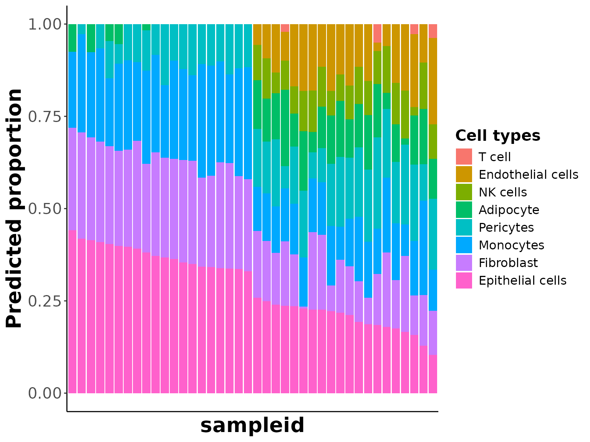
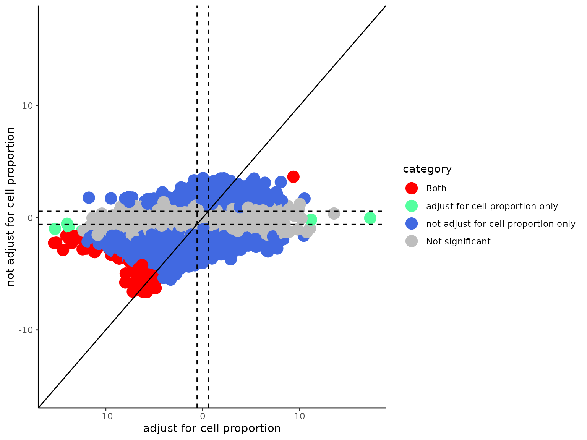
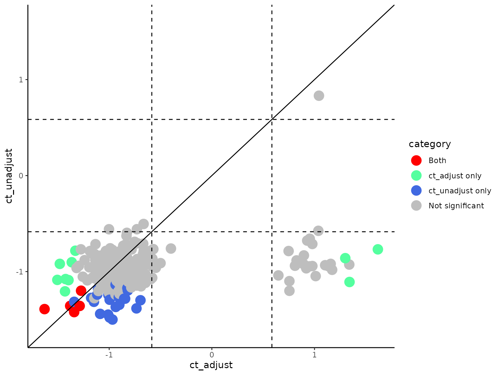
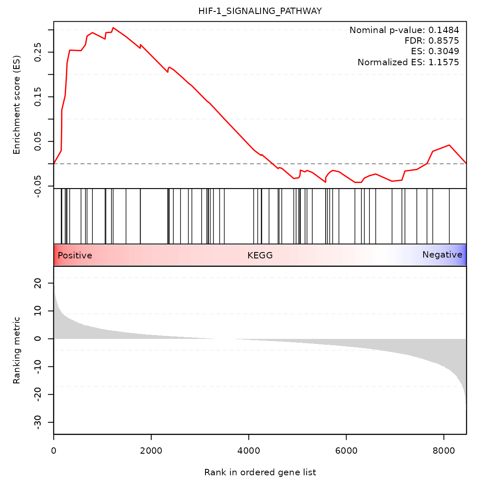

Cell type deconvolution and differential analysis
Compiled: June 03, 2024
Source:vignettes/Cell_type_deconvolution_and_differential_analysis.Rmd
Cell_type_deconvolution_and_differential_analysis.RmdFor this tutorial, we will firstly construct an integrated reference using single-cell RNA-seq (scRNA-seq) and single-nuclei RNA-seq (snRNA-seq) data from normal breast tissue samples.
Then, we will simulate artificial bulk RNA-seq samples using the constructed reference data. Predefined cell-type proportions will be used to introduce heterogeneity between groups for the simulated bulk samples.
We then use OLS method to deconvolute the bulk samples
and predict cell-type proportions for each sample. Differential
expression and pathway enrichment analysis will then be performed to
identify perturbed genes and pathways. We will also be examining the
effect of correcting for cell-type proportion differences on those
downstream analysis.
Construct integrated reference data
# path to reference datasets
ref_list <- c(paste0(system.file("extdata", package = "SCdeconR"), "/refdata/sample1"), paste0(system.file("extdata",
package = "SCdeconR"), "/refdata/sample2"))
# path to phenodata files
phenodata_list <- c(paste0(system.file("extdata", package = "SCdeconR"), "/refdata/phenodata_sample1.txt"),
paste0(system.file("extdata", package = "SCdeconR"), "/refdata/phenodata_sample2.txt"))
# construct integrated reference using harmony algorithm
refdata <- construct_ref(ref_list = ref_list, phenodata_list = phenodata_list, data_type = "cellranger",
method = "harmony", group_var = "subjectid", nfeature_rna = 50, vars_to_regress = "percent_mt",
verbose = FALSE)
refdata## An object of class Seurat
## 33734 features across 260 samples within 2 assays
## Active assay: SCT (8465 features, 2118 variable features)
## 1 other assay present: RNA
## 4 dimensional reductions calculated: pca, harmony, tsne, umapHere we set nfeature_rna to be 50 due to limited number
of cells we included in the data. You might want to apply a higher
cutoff for your own reference data.
what does refdata looks like
# refdata is a seurat object with those metadata information. use ?refdata for further
# documentation
str(refdata@meta.data)## 'data.frame': 260 obs. of 12 variables:
## $ orig.ident : chr "SeuratProject" "SeuratProject" "SeuratProject" "SeuratProject" ...
## $ nCount_RNA : num 2093 1576 945 3684 20403 ...
## $ nFeature_RNA : int 836 700 490 1341 3364 4632 1062 911 1767 447 ...
## $ cellid : chr "TAAGAGACACATGACT-1_1" "GACGTGCCAAGTAGTA-1_1" "TCGAGGCCACTTGGAT-1_1" "TTCTCAATCTTGGGTA-1_1" ...
## $ celltype : chr "Epithelial cells" "Epithelial cells" "Epithelial cells" "Epithelial cells" ...
## $ subjectid : chr "subject1" "subject1" "subject1" "subject1" ...
## $ cohort : chr "komentissuebank" "komentissuebank" "komentissuebank" "komentissuebank" ...
## $ percent_mt : num 0.478 4.822 1.799 3.366 4.284 ...
## $ nCount_SCT : num 759 887 746 627 574 558 553 627 626 744 ...
## $ nFeature_SCT : int 446 589 446 292 144 176 286 311 376 395 ...
## $ SCT_snn_res.0.8: Factor w/ 6 levels "0","1","2","3",..: 5 5 5 5 5 5 5 5 1 5 ...
## $ seurat_clusters: Factor w/ 6 levels "0","1","2","3",..: 5 5 5 5 5 5 5 5 1 5 ...Simulate artificial bulk RNA-seq samples based on integrated reference
Ideally, you should split the integrated reference data into training
and testing, and use the training data to generate artificial bulk
samples. The testing data is used in deconvolution step. However, for
the sake of this tutorial, due to the small # of cells we included in
the refdata, we will not split the data into training and
testing.
# create phenodata
phenodata <- data.frame(cellid = colnames(refdata), celltypes = refdata$celltype, subjectid = refdata$subjectid)
# Here is the number of cells per cell-type in refdata
table(refdata$celltype)##
## Adipocyte Endothelial cells Epithelial cells Fibroblast
## 20 40 40 40
## Monocytes NK cells Pericytes T cell
## 40 20 40 20Next we generate two sets of bulk data that have different cell-type proportions.
# equal proportions across cell-types
prop1 <- data.frame(celltypes = unique(refdata$celltype), proportion = rep(0.125, 8))
# generate 20 artificial bulk samples with the above cell-type proportions
bulk_sim1 <- bulk_generator(ref = GetAssayData(refdata, slot = "data", assay = "SCT"), phenodata = phenodata,
num_mixtures = 20, prop = prop1, replace = TRUE)
# high proportion of epithelial cells
prop2 <- data.frame(celltypes = unique(refdata$celltype), proportion = c(0.8, 0.1, 0.1, rep(0, 5)))
# generate 20 artificial bulk samples with the above cell-type proportions
bulk_sim2 <- bulk_generator(ref = GetAssayData(refdata, slot = "data", assay = "SCT"), phenodata = phenodata,
num_mixtures = 20, prop = prop2, replace = TRUE)
# combine the two datasets
bulk_sim <- list(cbind(bulk_sim1[[1]], bulk_sim2[[1]]), cbind(bulk_sim1[[2]], bulk_sim2[[2]]))what does simulated bulk data looks like
# bulk_generator returns a list of two elements. the first element is simulated bulk RNA-seq
# data, with rows representing genes, columns representing samples. show first five samples
str(bulk_sim[[1]][, 1:5])## 'data.frame': 8465 obs. of 5 variables:
## $ mix1_1: num 0.693 6.644 3.871 1.386 0.693 ...
## $ mix1_2: num 0.693 7.625 4.564 0.693 2.773 ...
## $ mix1_3: num 1.386 5.545 2.773 0.693 2.079 ...
## $ mix1_4: num 0.693 4.852 5.257 0 3.466 ...
## $ mix1_5: num 0.693 8.318 1.386 1.386 2.773 ...
# the second element is cell type proportions used to simulate the bulk RNA-seq data, with
# rows representing cell types, columns representing samples. show first five samples
str(bulk_sim[[2]][, 1:5])## 'data.frame': 8 obs. of 5 variables:
## $ mix1_1: num 0.125 0.125 0.125 0.125 0.125 0.125 0.125 0.125
## $ mix1_2: num 0.125 0.125 0.125 0.125 0.125 0.125 0.125 0.125
## $ mix1_3: num 0.125 0.125 0.125 0.125 0.125 0.125 0.125 0.125
## $ mix1_4: num 0.125 0.125 0.125 0.125 0.125 0.125 0.125 0.125
## $ mix1_5: num 0.125 0.125 0.125 0.125 0.125 0.125 0.125 0.125Perform cell-type deconvolution using OLS algorithm
# as mentioned ealier, we use the same reference data for deconvolution. in practice, we
# recommend to split your reference data into training and testing, and use testing data for
# decovolution
decon_res <- scdecon(bulk = bulk_sim[[1]], ref = GetAssayData(refdata, slot = "data", assay = "SCT"),
phenodata = phenodata, filter_ref = TRUE, decon_method = "OLS", norm_method_sc = "LogNormalize",
norm_method_bulk = "TMM", trans_method_sc = "none", trans_method_bulk = "log2", marker_strategy = "all")what does deconvolution result looks like
# scdecon returns a list of two elements the first element is a data.frame of predicted
# cell-type proportions, with rows representing cell types, columns representing samples.
str(decon_res[[1]])## num [1:8, 1:40] 0.2121 0.1286 0.1319 0 0.0924 ...
## - attr(*, "dimnames")=List of 2
## ..$ : chr [1:8] "Epithelial cells" "Monocytes" "Fibroblast" "T cell" ...
## ..$ : chr [1:40] "mix1_1" "mix1_2" "mix1_3" "mix1_4" ...
# the second element is a data.frame of fitting errors of the algorithm; first column
# represents sample names, second column represents RMSEs.
str(decon_res[[2]])## 'data.frame': 40 obs. of 2 variables:
## $ sample: chr "mix1_1" "mix1_2" "mix1_3" "mix1_4" ...
## $ RMSE : num 7.14 7.1 6.48 7.78 6.69 ...We can then generate a bar plot of predicted cell proportions across samples
prop_barplot(prop = decon_res[[1]], interactive = FALSE)
Perform differential expression analysis
# prepare sampleinfo, group1 and group2 were the two bulk sets we simulated eariler.
sampleinfo <- data.frame(condition = rep(c("group1", "group2"), each = 20))
row.names(sampleinfo) <- paste0("sample", 1:nrow(sampleinfo))
# prepare bulk samples
bulk <- bulk_sim[[1]]
# force data to be integers for DE purposes
for (i in 1:ncol(bulk)) storage.mode(bulk[, i]) <- "integer"
colnames(bulk) <- rownames(sampleinfo)
# prepare predicted cell-type proportions
prop = decon_res[[1]]
colnames(prop) <- colnames(bulk)
# perform DEA adjusting cell-type proportion differences
deres <- run_de(bulk = bulk, prop = prop, sampleinfo = sampleinfo, control = "group1", case = "group2",
de_method = "edgeR")
# perform DEA without adjusting cell-type proportion differences
deres_notadjust <- run_de(bulk = bulk, prop = NULL, sampleinfo = sampleinfo, control = "group1",
case = "group2", de_method = "edgeR")Next, we can compare the effect of adjusting for cell-type proportion differences
comparedeg_scatter(results1 = deres[[2]], results2 = deres_notadjust[[2]], result_names = c("adjust for cell proportion",
"not adjust for cell proportion"), fc_cutoff = 1.5, pval_cutoff = 0.05, pvalflag = TRUE, interactive = FALSE)
As you can see, many false positive differential genes were detected without adjusting for cell proportion differences.
Gene-set enrichment analysis
We also provide several visualization options for pathway enrichment
results generated using GSEA software.
Note that those functions are not compatible with the R implementation of
GSEA. Also remember to run reformt_gmt() to reformat the
gene-set names before using GSEA.
reformat_gmt(gmtfile = "/path/to/gmt/file/", outputfile = "/path/to/reformatted/gmt/file/", replace = TRUE)
## here is one example of reformatted gmt file for kegg pathway
gmt <- read_gmt(gmtfile = paste0(system.file("extdata", package = "SCdeconR"), "/gsea/gmtfile/kegg.gmt"))Prepare .rnk file.
prepare_rnk(teststats = deres[[2]], outputfile = "/path/to/rnk/file/")Use the reformatted .gmt file and .rnk file
to run GSEA. You can download GSEA here. Do not
use the R version implementation (our visualization functions are not
compatible with GSEA R implementation).
We included GSEA output using differential genes w/wo adjusting for cell-type differences. We can now compare the differences between those results.
comparegsea_scatter(gseares_path1 = paste0(system.file("extdata", package = "SCdeconR"), "/gsea/results/ct_adjust/"),
gseares_path2 = paste0(system.file("extdata", package = "SCdeconR"), "/gsea/results/ct_unadjust/"),
result_names = c("ct_adjust", "ct_unadjust"), nes_cutoff = 1.5, pval_cutoff = 0.1, pvalflag = FALSE,
interactive = FALSE)
We can then generate summary plot of top enriched gene-sets.
gsea_sumplot(gseares_path = paste0(system.file("extdata", package = "SCdeconR"), "/gsea/results/ct_adjust/"),
pos_sel = c("GLYCOSPHINGOLIPID_BIOSYNTHESIS", "FRUCTOSE_AND_MANNOSE_METABOLISM", "HIF-1_SIGNALING_PATHWAY"),
neg_sel = c("P53_SIGNALING_PATHWAY", "RENIN_SECRETION", "LYSOSOME"), pvalflag = FALSE, interactive = FALSE)
Heatmap of two selected gene-sets for demonstration.
gsea_heatmap(normdata = deres[[1]], teststats = deres[[2]], gmtfile = paste0(system.file("extdata",
package = "SCdeconR"), "/gsea/gmtfile/kegg.gmt"), numgenes = 200, gsname_up = "HIF-1_SIGNALING_PATHWAY",
gsname_down = "P53_SIGNALING_PATHWAY", anncol = sampleinfo, color = colorRampPalette(c("blue",
"white", "red"))(100))
Random-walk plot of selected gene-sets
gsea_rwplot(gseares_path = paste0(system.file("extdata", package = "SCdeconR"), "/gsea/results/ct_adjust/"),
gsname = "HIF-1_SIGNALING_PATHWAY", class_name = "KEGG")